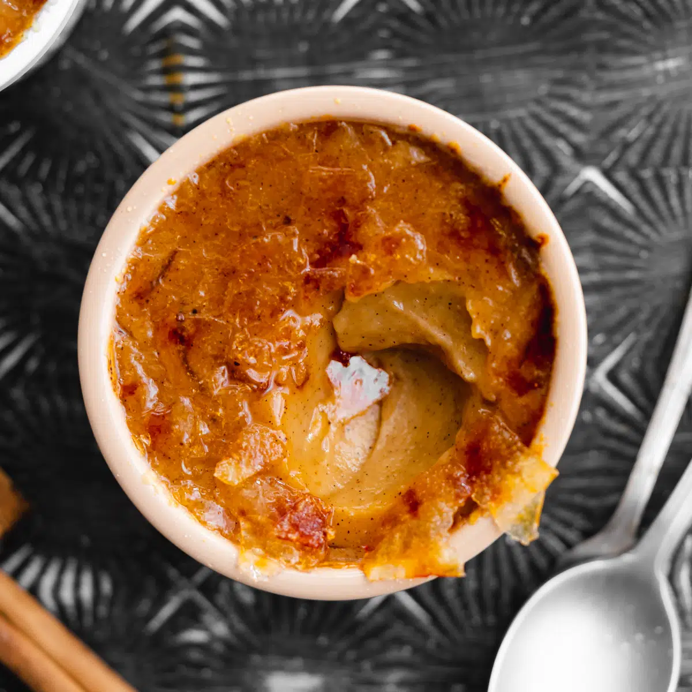

Pumpkin Creme Brulee

Ingredients
- 1/2 cup whole milk
- 1/8 teaspoon cinnamon
- pinches nutmeg
- 1 pinch ginger
- 1 pinch ground cloves
- 4 egg yolks
- 1/2 cup granulated sugar
- 1/4 cup canned pumpkin puree
- 1/3 cup coarse sugar or raw sugar
Instructions
- Pre-heat the oven to 300°F. If using homemade pumpkin puree, blend it a little more before using to make it an extra fine puree.
- In a medium bowl, whisk together 3 whole eggs and 1/2 cup sugar until well blended.
- Heat 1 and 3/4 cup heavy whipping cream in a sauce pan, almost to a simmer; stirring frequently so it doesn't scorch to the bottom.
- Slowly add hot cream into the egg/sugar mix. (Whisk while slowly adding the hot cream or you will end up with globs of scrambled eggs).
- Strain the mixture through a strainer into a large measuring cup or bowl with a pouring lip. Toss what's left behind in the strainer.
- Whisk in 1 cup pumpkin puree and 1/4 tsp cinnamon.
- Divide the mixture into 8 (4 oz) cups and place in a large casserole baking dish. Mine fit in two glass baking dishes. Fill the baking dish with boiling water about halfway up the sides of the ramekins. Bake at 300°F for 35-40 minutes. The centers of the creme brûlée should barely move when you wiggle the pan.
- Cool to room temperature, then cover and refrigerate creme brûlée until ready to serve; you can refrigerate them even a week before your event. Maybe I sampled one.
Making the Crisp topping:
- Once the brûlées are at least to room temperature, you can caramelize the top. Don’t refrigerate after caramelizing, or the sugar will melt. You want to keep the crisp sugar topping. Put 1 to 2 teaspoons of sugar on each custard, swirl to spread evenly. Heat the top with your torch moving in a circular pattern until the whole surface is caramelized to a rich amber color.